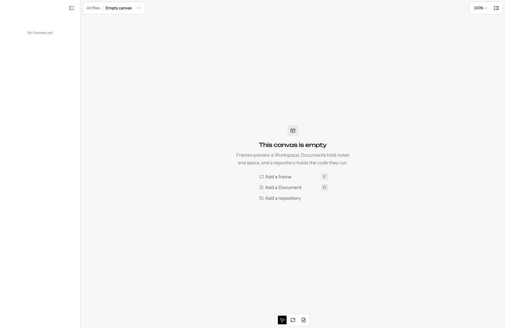
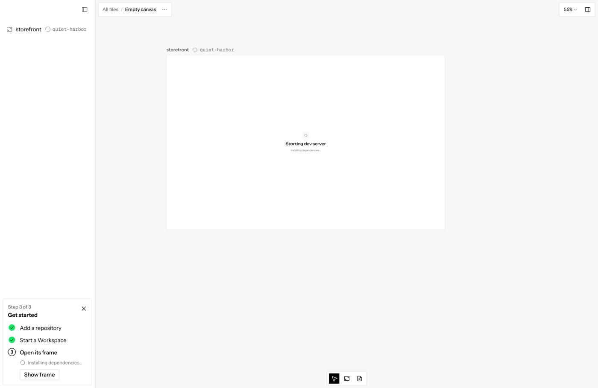
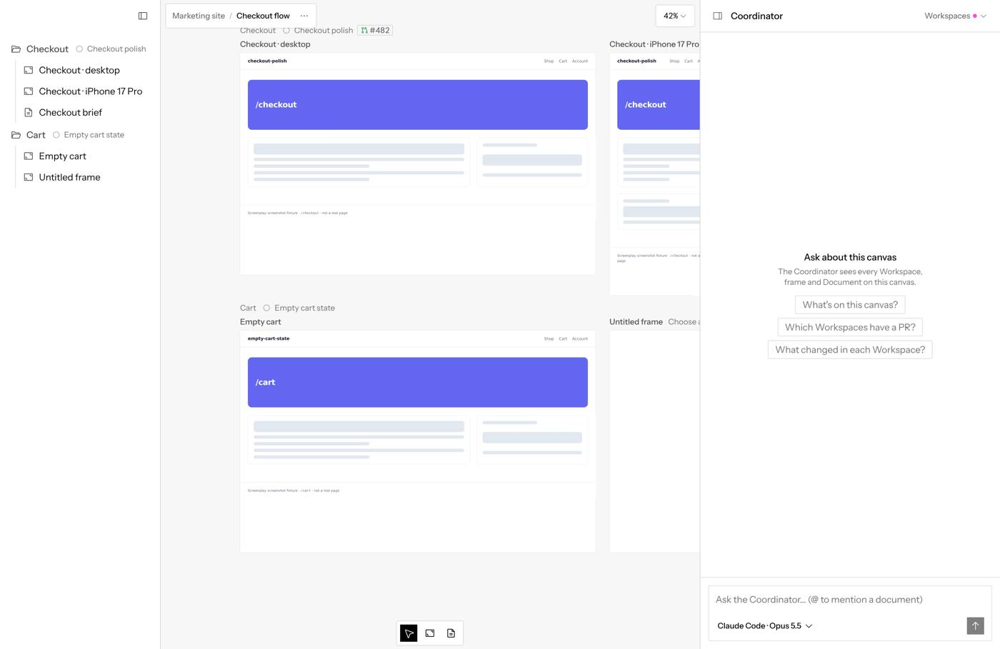

Getting started in a canvas
Should a new canvas start by showing you a running Workspace, or by asking the Coordinator for a change? Three flows, drawn from what the app does today, with a recommendation.
The first run skips the Coordinator entirely
- New canvas lands on “This canvas is empty” with Add a frame, Add a Document and Add a repository. The chat panel starts closed, so its “Add a repository to get started” state is never seen.
- Adding a repository (Canvas settings) immediately starts a Workspace with a random branch name like quiet-harbor, places its frame, and zooms to it. When the sandbox is up the panel opens on that Workspace's chat.
- The checklist teaches Workspace-first: Add a repository, Start a Workspace, Open its frame.
- The Coordinator is only met by clicking back to it. Its empty state (“Ask about this canvas”, with starters like “Which Workspaces have a PR?”) is about reading a busy canvas, which means nothing on a new one.
- If you do ask the Coordinator for a change while that fresh Workspace sits there, nothing tells it whether to use it or plan a new one. (Inferred from its system prompt; it only knows “a Workspace that fits”.)



One fact shapes every option: in Screenplay, seeing the app means running a Workspace (a sandbox and dev server). There is no free “look at main”. So “see first” always means starting a Workspace before you know what it is for.
C · See first, ask the Coordinator
Keep today's instant Workspace so the app is on the canvas within a minute, but land the panel on the Coordinator instead of jumping into the Workspace. Your first ask goes straight into that fresh Workspace, which then names itself after the ask. Nothing sits idle, there is no plan card for a single change, and the Coordinator is the home from the first minute, which is where #1152 was heading.
A · See first, work in the Workspace today, tidied
Adding a repository starts a Workspace and the panel opens its chat, like today. You type your change right there and the Workspace names itself after your first message. The Coordinator matters once there are several Workspaces.
Good
- Fastest path from repo to a change, and it's what the app already does.
- You spend your time in the agent chat, where most work happens.
- Close to other agentic tools with workspaces, which start you in a workspace chat.
Costs
- The Coordinator stays invisible until you go looking, so people never learn it exists.
- Contradicts the “Coordinator is the panel's home” direction.
- If you only wanted to look, a random-named Workspace is left behind.
B · Ask first, in the Coordinator
Adding a repository starts nothing. The panel is the Coordinator, asking what should change. Your ask becomes a plan card, and approving it creates the Workspace and its frame. This is the Claude Projects model: project chat first, threads come from it.
Good
- The Coordinator is the front door, matching Claude Projects and #1152.
- No Workspace exists without a purpose; every one has a real title.
Costs
- You can't see the app before describing a change to it. For a visual tool that's backwards.
- Two waits back to back: approve the plan, then wait for the sandbox.
- An extra click (Approve) for the most common case, one change.
C · See first, ask the Coordinator Recommended
Adding a repository starts one Workspace on the default branch, like today, so the app appears on the canvas. The panel stays on the Coordinator. Your first ask goes straight into that fresh Workspace (no plan card, since nothing new is created), and it names itself after the ask. Later asks that need a new Workspace get a plan card as they do now.
Good
- You see the app right away, and the sandbox you started to look is the one that does the first job.
- Coordinator is the home from minute one, with no extra click for the first change.
- Stays inside decisions already made: creating Workspaces still goes through a plan; sending to one that exists still acts right away.
Costs
- The first reply lands in the Workspace chat while you're on the Coordinator; you follow the task card (or the frame) to see it.
- Needs a clear rule so the Coordinator reuses the fresh Workspace instead of planning a new one.
| A · Workspace chat | B · Ask first | C · See, then ask | |
|---|---|---|---|
| App visible after adding a repo | Yes | Only after an ask is approved | Yes |
| Steps to the first change | Type | Type, Approve | Type |
| Where the panel lands | Workspace chat | Coordinator | Coordinator |
| Workspace left idle if you only look | Yes | No | Yes (same as today) |
| Size of the change | Small | Medium | Small |
Small changes inside today's flow
- Don't switch the panel on repo add. Today the Workspace is selected once its sandbox streams logs (
use-chat-target.ts, the LogProbe incanvas.tsx). For the repo-add Workspace, keep the Coordinator selected. - Open the panel on a new canvas. It starts closed today, which hides both “Add a repository to get started” and the Coordinator.
- Coordinator empty state for a fresh canvas. When no Workspace has been asked anything yet: “What should change in storefront?” and “Your first ask runs in the Workspace on the canvas.” The current starters stay for busy canvases.
- One rule in the Coordinator's prompt. A Workspace nobody has messaged yet takes the next ask through
send_to_workspace; it names itself on that first turn, as today. - Checklist steps. Add a repository, Ask the Coordinator for a change, Open the Workspace.
- Label the untouched Workspace “New Workspace” instead of its random branch name until its first turn names it (the branch name stays in the hover card).
Adding the first repository without Canvas settings
Today every Add repository outside settings opens the full Canvas settings dialog, and it stays open after the repository is added.
| Today (desktop) | Proposed | |
|---|---|---|
| 1 | Click Add a repository: Canvas settings opens | Click Add a repository: Open folder / Open GitHub repository menu |
| 2 | Click Add repository inside settings | Pick the folder or repository |
| 3 | Choose Open folder or GitHub, then pick | Back on the canvas: the app starts in a frame, panel on the Coordinator |
| 4 | Configure repository: confirm scripts, Add repository | (run settings detected; change them later in Canvas settings) |
| 5 | Close Canvas settings yourself |
Run settings are already detected from the repository (build info plus a model pass over its README and manifests), so the Configure step mostly asks you to confirm a guess. If the guess is wrong the dev server fails in the frame, which should offer Edit run settings.
Never show a branch as a Workspace's name
A Workspace with no title falls back to its branch name everywhere (one rule, in the Workspace label). It becomes “New Workspace” instead, in the regular UI font, until its first turn names it.
After the first ask, should the panel follow into the Workspace?
Stay (recommended): the panel stays on the Coordinator with the task card, like every other delegated ask since #1153; the frame shows progress. Follow: the first ask on a new canvas opens that Workspace's chat, so you watch the agent work, then Back returns to the Coordinator.